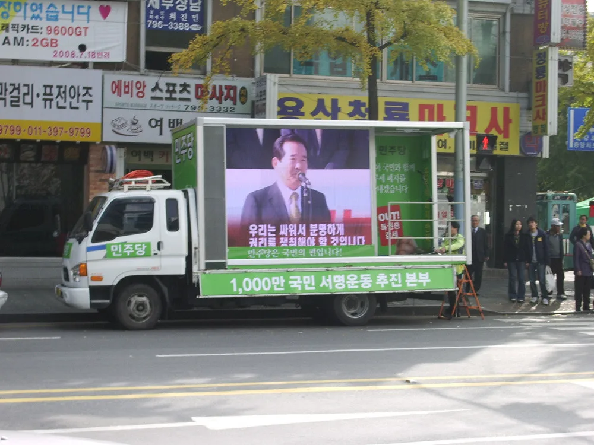
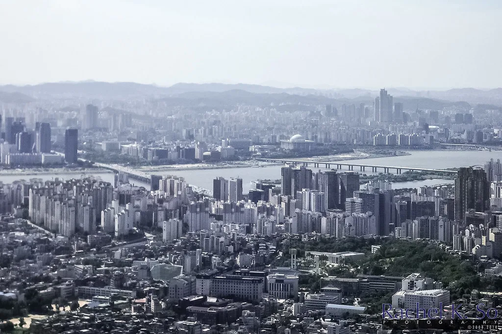

이재명 지지율 35.2%로 2주 연속 하락…민주당 7%p 급락
이재명 대통령의 국정수행 지지율이 2주 연속 내림세를 이어가며 30%대 중반까지 떨어졌다. 여론조사 전문기관 리얼미터가 지난 6일부터 8일까지 전국 18세 이상 유권자 1504명을 대상으로 진행한 조사에서 이 대통령의 지지율은 35.2%로 집계됐다. 이는 직전 조사보다 2.2%포인트 낮아진 수치로, 두 주 전부터 이어진 하락세가 꺾이지 않고 계속되는 모습이다.
정당 지지도 조사에서는 더 가파른 변동이 확인됐다. 집권당인 더불어민주당 지지율은 한 주 만에 7.0%포인트 급락해 35.5%를 기록했다. 반면 국민의힘은 전주보다 2.9%포인트 오른 41.3%로 올라서면서, 민주당을 다시 앞서는 역전 구도가 만들어졌다. 대통령 지지율과 집권당 지지율이 동시에 꺾인 가운데 제1야당 지지세가 뚜렷하게 반등한 셈이어서, 여권 내부에서도 이번 조사 결과를 가볍게 넘기기 어려운 분위기다.

리얼미터는 지지율 하락의 배경으로 여러 악재가 동시에 겹친 점을 꼽았다. 조희대 대법원장을 둘러싼 사법부 독립성 충돌 논란이 정치권 공방으로 번졌고, 비무장지대(DMZ) 지뢰 폭발 사태를 두고도 여야 간 안보 책임론이 가열됐다는 설명이다. 여기에 수도권을 중심으로 전월세와 아파트값이 다시 오름세를 보이면서 부동산 민심도 함께 자극을 받았다는 분석이 뒤따랐다. 공교롭게도 이 시기는 국정감사가 한창 진행되던 때와 맞물려, 인사·안보·부동산 이슈가 국감장에서 집중적으로 다뤄지며 부정적 평가를 키운 것으로 풀이된다.
이번 조사 결과를 두고 정치권 반응도 엇갈린다. 야권에서는 정권 출범 이후 누적된 피로감이 여론에 반영되고 있다고 해석하는 반면, 여권 일각에서는 특정 이슈에 따른 일시적 등락일 뿐이라며 신중한 접근을 주문하고 있다. 다만 민주당 지지율이 7%포인트나 급락한 수치는 최근 수개월 간 발표된 조사 가운데서도 눈에 띄는 변동폭이어서, 여당 내부에서도 원인 분석과 대응 방안을 둘러싼 논의가 이어질 것으로 보인다.

여론조사 지지율은 특정 시점의 여론 흐름을 보여주는 지표이지만, 연속 두 차례 하락세가 확인된 만큼 정치권에서는 다음 조사 결과를 주시하는 분위기다. 특히 지뢰 폭발 사태나 부동산 가격 추이처럼 아직 진행 중인 이슈들이 어떻게 수습되느냐에 따라 지지율 흐름이 또 한 번 바뀔 가능성이 있다는 전망도 나온다. 국정감사 기간에는 각 상임위원회에서 정부 부처를 상대로 날카로운 질의가 이어지는 만큼, 통상적으로도 여당보다는 정부·여당에 불리한 이슈가 더 많이 부각되는 경향이 있다는 점도 함께 거론된다.
정치권 일각에서는 이번 하락세를 두고 집권 초반 누적된 국정 운영 부담이 여론에 반영되기 시작한 신호로 보는 시각도 있다. 조희대 대법원장 관련 논란처럼 행정부와 사법부 간 긴장으로 비칠 수 있는 사안이나, 안보와 직결되는 DMZ 지뢰 폭발 사태 같은 이슈는 정부·여당에 대한 신뢰도에 민감하게 영향을 줄 수 있는 성격을 지닌다. 부동산 가격 상승 역시 수도권 거주 유권자들의 체감 민심과 직결되는 만큼, 복합적인 악재가 동시에 작용했다는 해석에 힘이 실린다.
이번 리얼미터 조사는 전국 18세 이상 유권자를 대상으로 한 표본조사인 만큼, 표본오차 등 통계적 한계는 함께 고려해야 한다는 지적도 있다. 그럼에도 대통령과 집권당 지지율이 동반 하락하고 제1야당이 반등한 패턴은 향후 정국 운영에 적지 않은 부담으로 작용할 수 있다는 관측이 정치권 안팎에서 제기되고 있다. 여권으로서는 남은 국정감사 일정과 각종 현안을 어떻게 수습하느냐가 다음 조사에서 하락세를 멈출 수 있을지를 가르는 분수령이 될 전망이다.